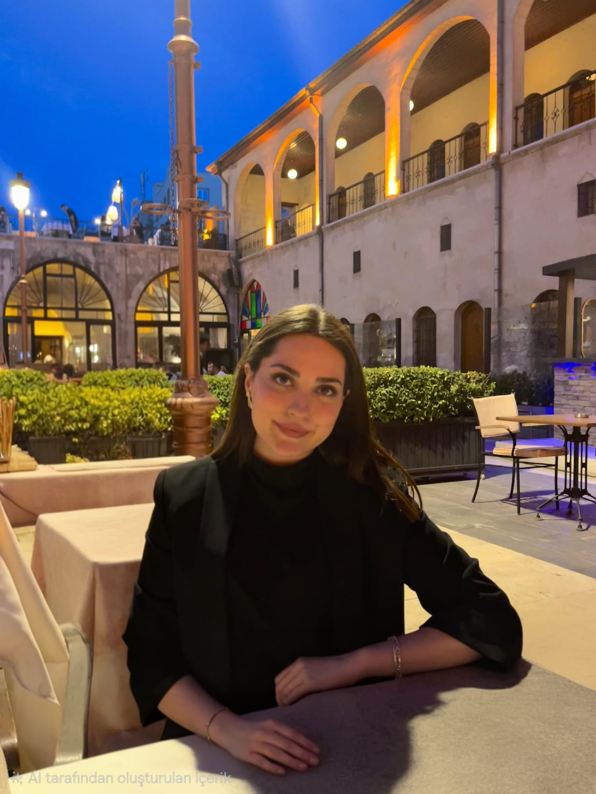

Kişiye Özel Beslenme
İhtiyaçlarınıza ve yaşam tarzınıza uygun kişiselleştirilmiş beslenme planları.
Kişiye özel beslenme programları, online ve yüz yüze danışmanlık hizmetleriyle sağlıklı yaşam yolculuğunuzda yanınızdayım.

Sağlıklı yaşam hedeflerinize uygun, kişiselleştirilmiş danışmanlık hizmetleri.
İhtiyaçlarınıza ve yaşam tarzınıza uygun kişiselleştirilmiş beslenme planları.
Bulunduğunuz yerden online görüşmelerle düzenli beslenme danışmanlığı ve takip.
Ölçümleriniz değerlendirilerek gelişiminizin düzenli şekilde takip edilmesi.
Düzenli görüşmelerle beslenme programınızın ihtiyaçlarınıza göre güncellenmesi.
Sağlıklı beslenmenin yasaklarla değil, sürdürülebilir alışkanlıklarla mümkün olduğuna inanıyorum.
Danışanlarıma bilimsel temellere dayanan, kişiye özel beslenme programları hazırlıyor ve sağlıklı yaşam yolculuklarında onlara destek oluyorum.
Sağlıklı yaşam yolculuğunuzda güvenilir, bilimsel ve sürdürülebilir bir danışmanlık.
Güncel bilimsel bilgiler doğrultusunda kişiye özel planlar hazırlanır.
Gelişiminiz düzenli olarak değerlendirilir ve programınız ihtiyaçlarınıza göre güncellenir.
Kısa süreli çözümler yerine sağlıklı yaşam alışkanlıkları oluşturmayı hedefleriz.
Sağlıklı yaşam yolculuğundan bazı deneyimler.
“İlk kez sürdürülebilir bir beslenme programı uygulayabildim. İlginiz ve desteğiniz için teşekkür ederim.”
“Online takip süreci çok düzenliydi. Her soruma hızlıca dönüş aldım.”
“Kesinlikle tavsiye ederim. İletişim çok özenliydi.”
Sağlıklı yaşam yolculuğunuza bugün başlayın. Sorularınız için bana ulaşabilirsiniz.